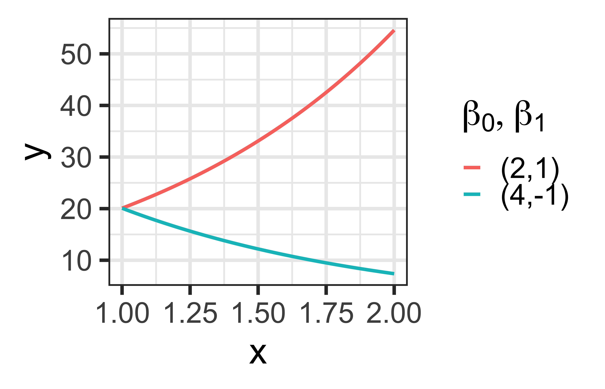
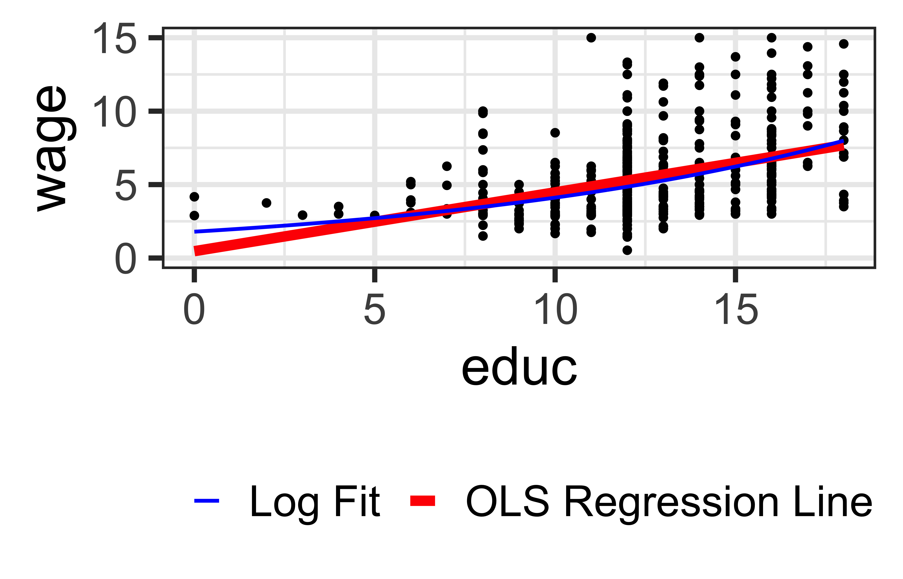
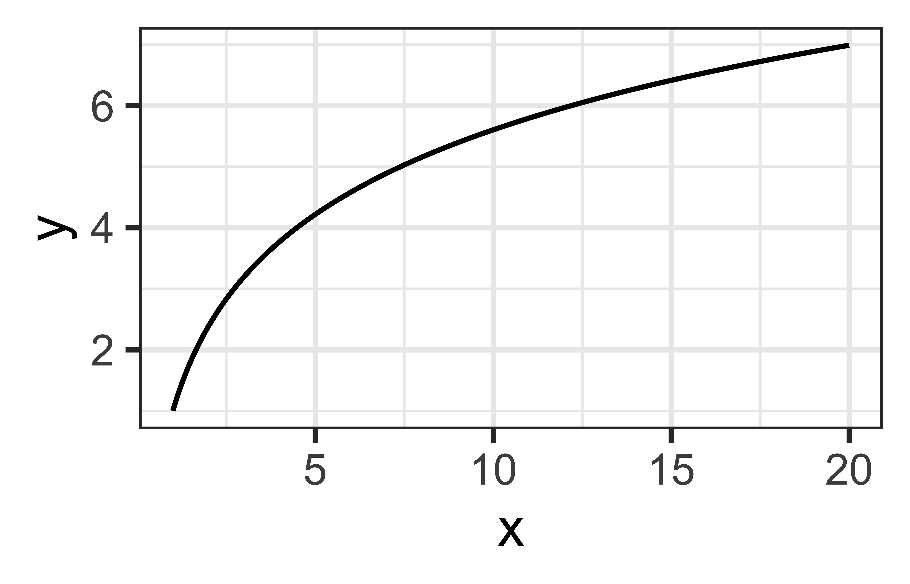
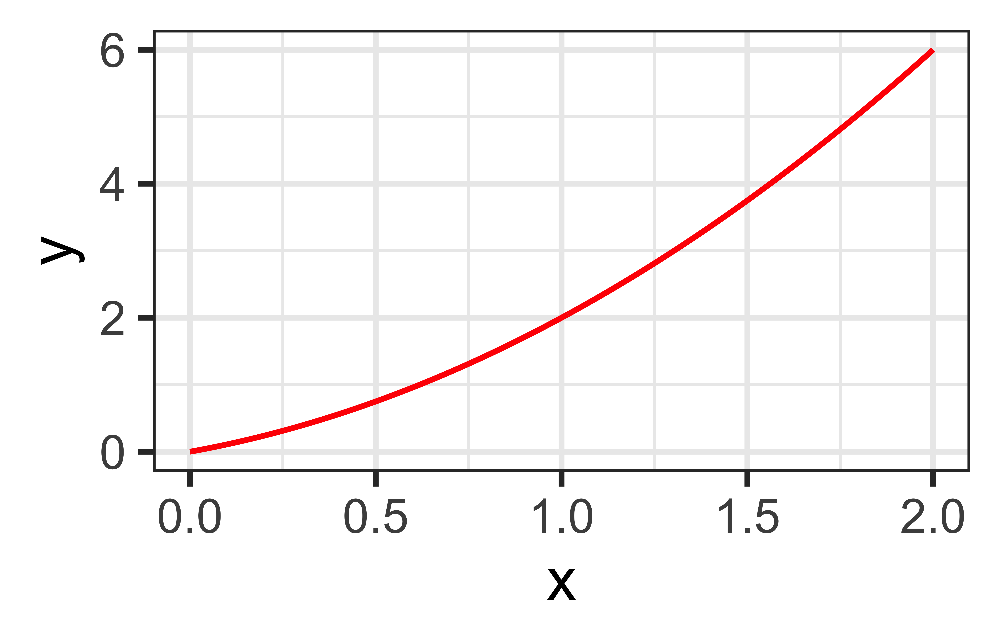
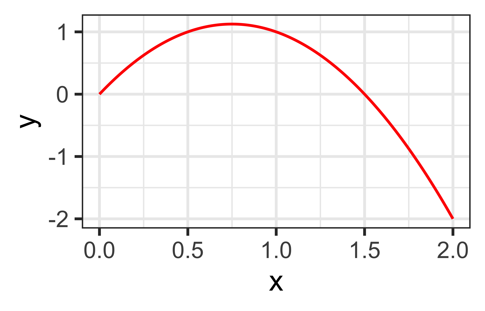
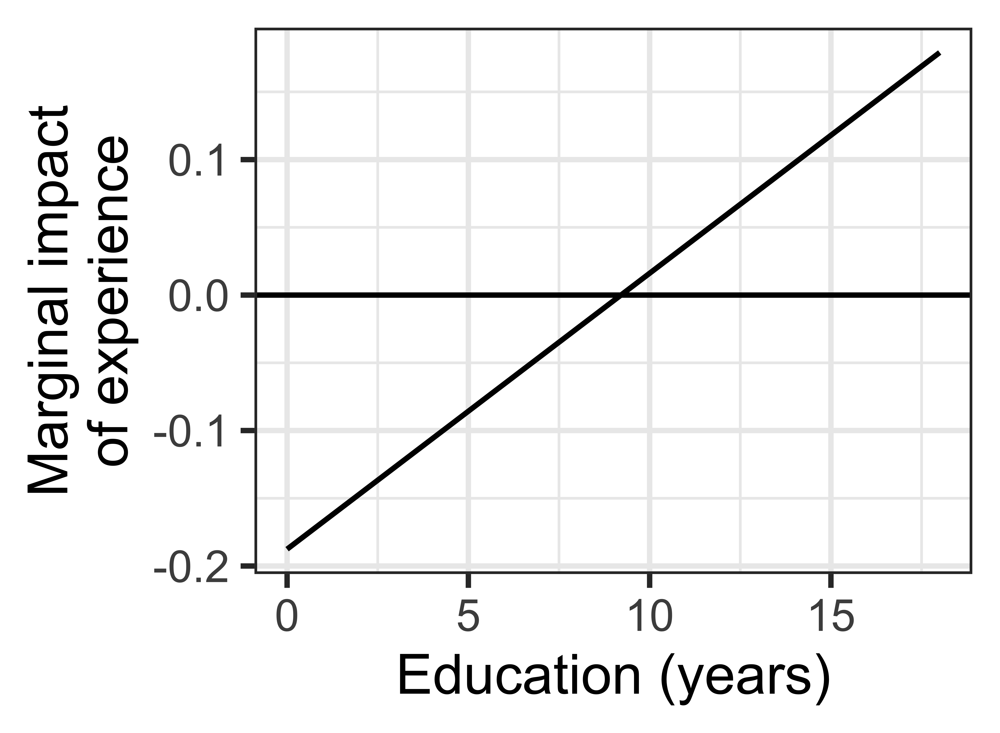
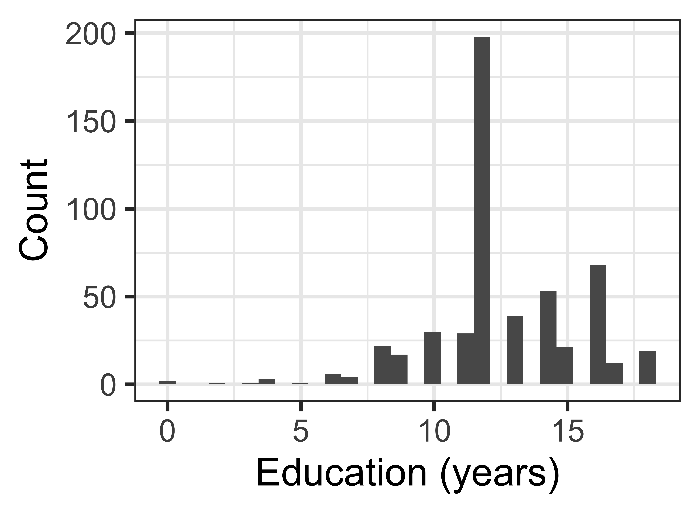
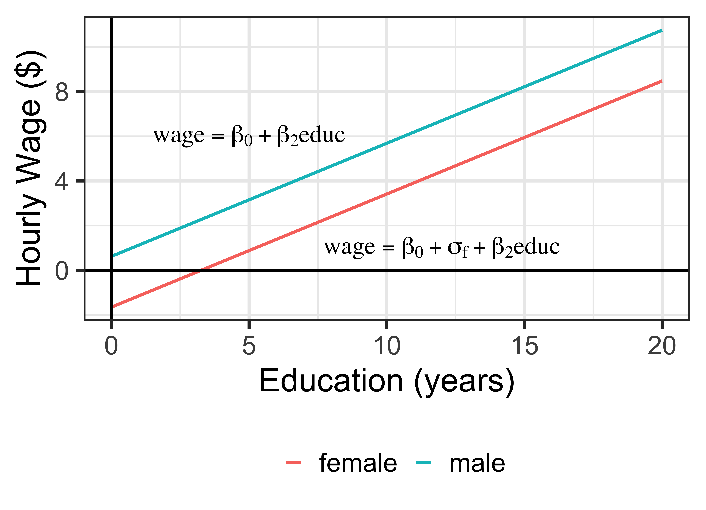
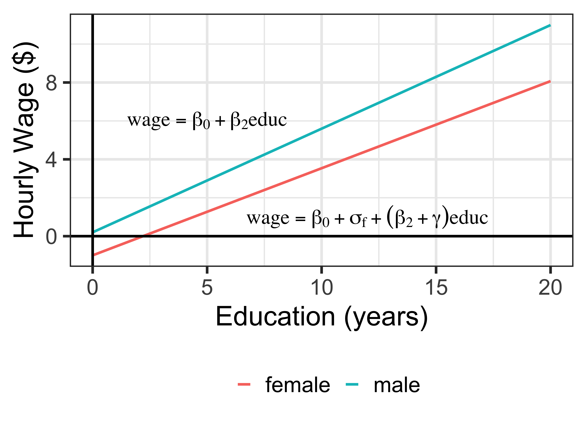

Transformation is the tool that lets a linear model describe a nonlinear relationship. The phrase to hold onto is linear in parameters. We can take logs, square a regressor, or multiply two variables together, and every result we have proved so far still applies, because the model remains a linear combination of unknown coefficients. What changes is the interpretation. A coefficient no longer answers the question how much does y change when x rises by one unit; the answer now depends on the transformation, and sometimes on where you are along the x axis. The four models on this slide are the ones we will work through.
Transformation of variables is allowed without disturbing our analytical framework as long as the model is linear in parameter .
Transformation of variables change the interpretation of the coefficients estimates
Example models
log-linear
log(y_i)= \beta_0+\beta_1 x_i + u_i
linear-log
y_i= \beta_0+\beta_1 log(x_i) + u_i
log-log
log(y_i)= \beta_0+\beta_1 log(x_i) + u_i
quadratic
y_i= \beta_0 + \beta_1 x_i + \beta_2 x_i^2 + u_i
Students reasonably object at this point: the pictures are curved, so how can we call these linear models. The resolution is that linear refers to how the parameters enter, not how the variables enter. In the two examples at the bottom, a coefficient appears as an exponent and inside a denominator. No amount of rewriting turns those into a linear combination of betas, so ordinary least squares does not apply and we would need nonlinear estimation. Contrast that with a squared regressor: education squared is just another column of numbers, and its coefficient enters additively. That model is linear in parameters and OLS is fine.
In the models we just saw, the dependent variable and independent variable are non-linearly related, how come are these models called simple linear model?
“linear” in simple linear model means that the model is linear in parameter , but not in variable
Examples: Non-linear models
\begin{align*} y_i=\beta_0+x_i^{\beta_1}+u_i \\ y_i=\frac{x_i}{\beta_0+\beta_1 x_i}+u_i \end{align*}Note
Transformation of the dependent and independent variables would not affect the properties of the OLS estimator as long as the model is linear in parameter.
This is the practical motivation. The fertilizer equation says the tenth pound of nitrogen raises yield by exactly as much as the hundredth pound. No agronomist believes that. Yields flatten out and can eventually decline. If we insist on a straight line, the estimated slope becomes an average over a range where the true response is steep at one end and flat at the other, and any recommendation we derive from it will be wrong at both ends. Functional form is not decoration. It encodes what you already know about the process, and getting it wrong biases the answer to the question you actually care about.
Consider a following model:
\begin{align*} \text{corn yield} = \beta_0 + \beta_1 \cdot \text{fertilizer} + \mu \end{align*}Question
What is wrong with this model?
Take logs of the dependent variable only. Differentiating both sides with respect to x, the chain rule puts one over y on the left, so beta one equals the proportional change in y per one-unit change in x. Multiply by one hundred and you have a percentage. The wording matters: a one-unit increase in x is associated with a beta-one-times-one-hundred percent change in y, not a beta-one-unit change. This approximation is good for small beta one; for larger coefficients the exact percentage is one hundred times the quantity exponential of beta one minus one.
Model
\begin{align} log(y_i)= \beta_0+\beta_1 x_i + u_i \notag \end{align}Calculus
Differentiating the both sides wrt x_i,
\begin{align} \frac{1}{y_i}\cdot\frac{\partial y_i}{\partial x_i} = \beta_1 \Rightarrow \frac{\Delta y_i}{y_i} = \beta_1 \Delta x_i \notag \end{align}Interpretation
\beta_1 measures a percentage change in y_i (once multiplied by 100) when x_i is increased by one unit
The two curves show what the log-linear form imposes. Both are exponential in x, because undoing the log means exponentiating. With a positive coefficient the curve rises at an accelerating rate; with a negative one it decays toward zero but never crosses it. That last property is often the reason to choose this form. Wages, prices, and yields cannot be negative, and a log-linear specification cannot predict a negative value no matter how far you extrapolate. A model that is linear in the level offers no such guarantee.

Applying the same algebra to the wage equation gives the interpretation you will use constantly in labor economics. Beta one is the proportional change in wage per additional year of schooling, so multiplying by one hundred gives the return to education in percent. This is why log wage rather than wage is the standard left-hand-side variable in this literature. A percentage return is comparable across countries, decades, and wage levels, whereas a dollar return is not.
Model
\begin{align} log(wage)=\beta_0 + \beta_1 educ + u \notag \end{align}Calculus
Differentiating both sides with respect to educ,
\begin{align} \frac{1}{wage} \frac{\partial wage}{\partial educ} = \beta_1 \Rightarrow \frac{\Delta wage}{wage} = \beta_1\Delta educ\notag \end{align}Interpretation
If education increases by 1 year (\Delta educ=1), then wage increases by \beta_1*100\% (\frac{\Delta wage}{wage}=\beta_1)
Here is the fitted log-linear equation and what it looks like back in dollar space. The red line comes from regressing wage directly on education; the blue curve is the log-linear fit exponentiated. Notice the shapes differ most at the ends of the education range, which is exactly where a straight line is most likely to mislead. The callout flags a subtlety worth stating once: exponentiating the fitted line gives a predicted median, not a predicted mean, because the expectation of an exponential is not the exponential of an expectation.
When you estimate the following model using the wage dataset:
log(wage)=\beta_0 + \beta_1 educ + u \notag
Then, the estimated equation is the following:
\begin{align} \widehat{log(wage)}=0.584+0.083 educ \notag \end{align} \begin{align} \widehat{wage}=e^{0.584+0.083 educ} \end{align}Careful
Exponentiating the fitted line gives the predicted median of wage, not its mean. Because E[e^u]>e^{E[u]}, recovering E[wage\mid educ] requires an extra retransformation factor.

Now the transformation is on the right-hand side instead. Differentiating, the derivative of the log puts one over x on the right, so beta one multiplies the proportional change in x. Read the interpretation carefully: a one percent increase in x, meaning delta x over x equals zero point zero one, raises y by beta one times zero point zero one in the units of y. Students routinely misstate this as a one-unit change in x, so slow down here. This form suits a regressor with strongly diminishing returns, such as firm size or income.
Model
\begin{align} y_i= \beta_0+\beta_1 log(x_i) +u_i \notag \end{align}Calculus
Differentiating the both sides wrt x_i,
\begin{align} \frac{\partial y_i}{\partial x_i} = \frac{\beta_1}{x_i} \Rightarrow \Delta y_i = \beta_1\frac{\Delta x_i}{x_i} \notag \end{align}Interpretation
When x increases by 1\% (that is, \frac{\Delta x_i}{x_i} = 0.01), y increases by \beta_1 \times 0.01 units.
The linear-log curve rises steeply at small x and then flattens, without ever turning over. That is the shape to keep in mind when choosing between this and a quadratic. Linear-log imposes diminishing returns that never become negative; a quadratic allows the relationship to peak and come back down. Which restriction you want is a substantive question about the process, not a statistical one, and you should be able to defend the choice before you look at the fit.
y = \beta_0 + \beta_1 log(x) = 1 + 2 \times log(x)

Logs on both sides give the constant-elasticity model, which is why this specification appears everywhere in demand and production estimation. Beta one is an elasticity: a one percent change in x produces a beta-one percent change in y, and crucially that percentage is the same everywhere along the curve. That constancy is a real restriction. If you believe demand is more elastic at high prices than at low ones, log-log has assumed the problem away, and you would need interactions or a more flexible form to let the elasticity vary.
Model
\begin{align} log(y_i)= \beta_0+\beta_1 log(x_i) +u_i \notag \end{align}Calculus
Differentiating the both sides wrt x_i,
\begin{align} \frac{\partial y_i}{y_i}/\frac{\partial x_i}{x_i} = \beta_1 \Rightarrow \frac{\Delta y_i}{y_i} = \beta_1 \frac{\Delta x_i}{x_i}\notag \end{align}Interpretation
A percentage change in x would result in a \beta_1 percentage change in y_i (constant elasticity)
The quadratic adds a squared term and lets the slope vary with x. Differentiating gives beta one plus two times beta two times x, so the marginal effect now depends on where you evaluate it. This is the single most important consequence and it drives the rest of the lecture: there is no longer one number you can report as the effect of x. Note also that beta one on its own is only the marginal effect at x equal to zero, which is often outside the data and rarely interesting by itself.
Model
y_i= \beta_0 + \beta_1 x_i + \beta_2 x_i^2 + u_i
Calculus
Differentiating the both sides wrt x_i,
\frac{\partial y_i}{\partial x_i} = \beta_1 + 2*\beta_2 x_i\Rightarrow \Delta y_i = (\beta_1 + 2*\beta_2 x_i)\Delta x_i
Interpretation
When x increases by 1 unit (\Delta x_i=1), y increases by \beta_1 + 2*\beta_2 x_i
The two panels show how flexible this form is. On the left both coefficients are positive and the curve accelerates upward. On the right beta two is negative, so the curve rises, peaks, and falls. That turning point sits at minus beta one over two beta two. Always check where the turning point lands relative to your data. If it falls well outside the observed range of x, the quadratic is behaving like a smoothly curved line over the range you care about, and you should not describe your results as if you had estimated a peak.
Quadratic functional form is quite flexible.
y = x + x^2 (\beta_1 = 1, \beta_2 = 1)

y = 3x-2x^2 (\beta_1 = 3, \beta_2 = -2)

The three questions on this slide are meant to make the constant-slope assumption feel wrong. Two more years of schooling after elementary school, after a bachelor’s degree, and midway through a doctorate almost certainly do not carry the same return. Once you accept that, a model forcing one number onto all three cases is misspecified. The quadratic is the simplest way to let the data tell you how the return changes with the level of schooling.
Education impacts on income
The marginal impact of education (the impact of a small change in education on income) may differ depending on the level of education you have had:
How much does it help to have two more years of education when you have had education until elementary school?
How much does it help to have two more years of education when you have graduated a college?
How much does it help to spend two more years as a Ph.D student if you have already spent six years in a Ph.D program
Observation
The marginal impact of education does not seem to be linear.
In R, any transformation of an existing variable goes inside the I function, which tells the formula parser to treat what follows as arithmetic rather than as formula syntax. Without it, the caret has a special meaning in a formula and you would not get the squared term you intended. Run this cell and look at the two education coefficients. The linear term is negative and the squared term is positive, which alone tells you the fitted relationship is U-shaped in education over some range.
When you want to include a variable that is a transformation of an existing variable, you can use I() function in which you write the mathematical expression of the desired transformation.
The plotted curve holds female at one and traces predicted wage across the education range. The fitted relationship falls slightly at low education and then rises increasingly steeply. Do not over-read the downward portion. Very few people in this sample have only a few years of schooling, so that part of the curve rests on little data and is largely an artifact of forcing a parabola through the whole range. This is a good habit generally: overlay the data before interpreting a fitted curve.
Estimated Model
wage = 5.60 - 2.12\times female -0.416\times educ + 0.039\times educ^2
Here is the marginal effect written out, along with the two coefficients and their t-statistics. Notice that neither t-statistic answers the question we care about. The first tests whether the coefficient on education alone is zero, which is the marginal effect only at zero years of schooling. The second tests the curvature. What we actually want is whether the whole expression, a combination of two estimated coefficients, differs from zero at a particular education level. That is a different test, and building it is what the next section does.
According to the estimated model, the marginal impact of educ is:
\frac{\partial wage}{\partial educ} = -0.416+0.039\times 2\times educ
When educ = 4, additional year of education is going to increase hourly wage by -0.104 on average
When educ = 10, additional year of education is going to increase hourly wage by 0.364 on average
This slide sets up the problem cleanly. In the quadratic model the marginal effect of education is a linear combination of two coefficients whose weights depend on the education level you pick. So the question is the marginal effect statistically significant is incomplete until you say at what value of education. We will first review the easy linear case, where the question has a single answer, and then handle the quadratic case where it does not.
Let’s work with the income model, in which the marginal impact of educ is:
\begin{align*} \frac{\partial wage}{\partial educ} = -0.416+0.039\times 2\times educ \end{align*}Question
So, is the marginal impact of educ statistically significantly different from 0?
Start with the linear specification as a baseline. Here the marginal effect of education is a single coefficient, about fifty-one cents an hour per year of schooling, and it is the same for everyone regardless of their education level. That constancy is what makes the linear case easy: testing significance of the effect is just the t-test on one coefficient, which the regression output already prints for you. Work through the two questions before moving on, because the contrast with the quadratic case is the whole point.
Regression
Estimated model
wage = 0.62 - 2.27 \times female + 0.51 \times educ
The marginal effect is the coefficient on education, about zero point five one. In the linear model the answer really is that simple, which is precisely why we tend to forget that it is a special case rather than the general rule.
What is the marginal impact of educ?
No, and notice that we assumed it away rather than discovering it. By writing education as a single linear term we imposed that an extra year is worth the same to someone with eight years of schooling and someone with eighteen. That is not a finding from the data; it is a restriction we chose when we specified the model, and the quadratic specification is what lets us relax it.
Does the marginal impact of education vary depending on the level of education?
In the linear case, the significance test for the marginal effect is already in the regression output. The coefficient on education is the marginal effect, so its t-statistic and p-value answer the question directly. Nothing extra is required. Hold onto this, because the contrast is coming: as soon as the marginal effect involves more than one coefficient, the printed t-statistics no longer test what you want.
You can just test if \hat{\beta}_{educ} (the marginal impact of education) is statistically significantly different from 0, which is just a t-test.
Three consequences follow from a varying marginal effect. It changes with the education level, so there is no universal answer to whether education matters. There is no single test that settles significance for everyone. And you therefore need to choose the education levels at which the question is interesting and test at each of them. That choice is substantive: pick values that correspond to real, well-populated cases in your data, not values that happen to give you the answer you wanted.
With the quadratic specification
The marginal impact of education varies depending on your education level
There is no single test that tells you whether the marginal impact of education is statistically significant universally
Indeed, you need different tests for different education levels
We evaluate at four years of schooling. Note carefully what the null says. It is a statement about the population parameters, a single equation combining two of them with weights one and eight. That makes it a test of one linear restriction, which is a t-test, not an F-test of several restrictions. The three-way question on the slide is worth pausing on, because students commonly reach for an F-test whenever they see two coefficients appear in a hypothesis.
Marginal impact of education
\hat{\beta}_{educ} + \hat{\beta}_{educ^2} \times 2 \times educ
Hypothesis testing
Does an additional year of education have a statistically significant impact (positive or negative) if your current education level is 4?
H_0: \beta_{educ} + \beta_{educ^2} \times 2 \times 4 =0
H_1: \beta_{educ} + \beta_{educ^2} \times 2 \times 4 \ne 0
Note
Hypotheses are statements about the population parameters \beta, never about the estimates \hat{\beta}. We use the estimates to build the test statistic below.
Question
Is this
t-statistic
t = \frac{\hat{\beta}_{educ} + \hat{\beta}_{educ^2} \times 2 \times 4}{se(\hat{\beta}_{educ} + \hat{\beta}_{educ^2} \times 2 \times 4)} = \frac{\hat{\beta}_{educ} + \hat{\beta}_{educ^2} \times 8}{se(\hat{\beta}_{educ} + \hat{\beta}_{educ^2} \times 8)}
The linearHypothesis function from the car package takes the restriction as a text string, written exactly as it appears in the null. The trick noted above is that R reports this as an F-statistic on one degree of freedom, and an F on one and n minus k minus one degrees of freedom is just the square of the corresponding t. So the p-value is the one you want. Here it is zero point three nine four, so at four years of schooling we cannot distinguish the marginal effect from zero.
Remember, a trick to do this test using R is take advantage of the fact that F_{1, n-k-1} \sim t_{n-k-1}^2.
The p-value is 0.394, so we do not reject the null: at an education level of 4, the marginal impact of education is not statistically distinguishable from zero.
Now repeat at ten years of schooling. The structure is identical; only the weight changes, from eight to twenty. This is worth doing explicitly rather than describing, because it makes concrete that we are running a genuinely different test, not reinterpreting the same one. Same model, same coefficients, same standard errors, different linear combination, and therefore a different answer.
Marginal impact of education
\hat{\beta}_{educ} + \hat{\beta}_{educ^2} \times 2 \times educ
Hypothesis testing
Does an additional year of education have a statistically significant impact (positive or negative) if your current education level is 10?
H_0: \beta_{educ} + \beta_{educ^2} \times 2 \times 10 =0
H_1: \beta_{educ} + \beta_{educ^2} \times 2 \times 10 \ne 0
Question
Is this
t-statistic
t = \frac{\hat{\beta}_{educ} + \hat{\beta}_{educ^2} \times 2 \times 10}{se(\hat{\beta}_{educ} + \hat{\beta}_{educ^2} \times 2 \times 10)} = \frac{\hat{\beta}_{educ} + \hat{\beta}_{educ^2} \times 20}{se(\hat{\beta}_{educ} + \hat{\beta}_{educ^2} \times 20)}
The same command with twenty in place of eight. The p-value is now far below one percent, so at ten years of schooling the marginal effect of education is clearly positive and statistically significant. Put the two results side by side: identical model and identical estimates, but at four years we could not reject zero and at ten years we reject decisively. That is the practical payoff of taking the varying marginal effect seriously.
The p-value is far below 0.01, so we reject the null at the 1% level: at an education level of 10, the marginal impact of education is statistically significant.
An interaction term is simply the product of two variables entered as an additional regressor. The important callout on this slide is a warning about the example itself. To keep the algebra short we have left education out as a standalone term. In your own work, include both main effects whenever you include their product. Omitting one imposes restrictions you almost certainly do not intend, and it is one of the most common specification errors in student papers.
A variable that is a multiplication of two variables
Example
educ\times exper
A model with an interaction term
wage = \beta_0 + \beta_1 exper + \beta_2 educ \times exper + u
A deliberately stripped-down model
Notice that educ does not enter on its own here. This keeps the algebra on the next slides as simple as possible, but it is not what you should do in your own work.
Rule of thumb: whenever you include an interaction x_1 \times x_2, include x_1 and x_2 as separate terms too. Omitting a main effect forces the marginal impact of exper to be exactly \beta_1 when educ = 0 and constrains educ to affect wage only through exper — a restriction you almost never want to impose.
Differentiating with respect to experience gives beta one plus beta two times education, so the return to experience now depends on schooling. Read the two coefficients carefully. Beta one is the return to experience for someone with zero years of education, which is an extrapolation well outside the data here. Beta two tells you how much that return changes per additional year of schooling. A positive beta two means experience and education reinforce each other.
Marginal impact of experience:
\frac{\partial wage}{\partial exper} = \beta_1+\beta_2\times educ
Implications
The marginal impact of experience depends on education
\beta_1: the marginal impact of experience when educ=0
if \beta_2>0: additional year of experience is worth more when you have more years of education
Again the product goes inside the I function so the formula parser multiplies the two columns rather than reading the asterisk as formula shorthand. As an aside, fixest also accepts education times experience directly, which would automatically add both main effects. That would be the better specification in practice, and we are writing it out the long way here only so that the algebra on the previous slide matches the output exactly.
Just like the quadratic case with educ^2, you can use I().
The left panel plots the estimated marginal effect of experience across the education range, with a horizontal line at zero. It starts negative and crosses zero somewhere in the middle of the range. The right panel shows why you must look at both together: the histogram tells you where the data actually are. A marginal effect estimated at an education level with almost no observations is not something to build a conclusion on, however tight the standard error looks.
Estimated Model
wage = 6.121 - 2.418 \times female - 0.188 \times exper + 0.020 \times educ \times exper
Marginal impact of experience
\frac{\partial wage}{\partial exper} = - 0.188 + 0.020 \times educ
Marginal impact of exper:

Histogram of education:

Same logic as the quadratic case. The marginal effect of experience at ten years of schooling is a linear combination of two coefficients, so we are testing one linear restriction on the population parameters. Notice the arithmetic on this slide: at ten years the effect is about one cent an hour, and at fifteen years about eleven cents. Whether either is statistically distinguishable from zero is exactly what the test decides.
Just like the case of the quadratic specification of education, marginal impact of experience is not constant
We can test if the marginal impact of experience is statistically significant for a given level of education
Question
Does an additional year of experience have a statistically significant impact (positive or negative) if your current education level is 10
Hypothesis
H_0: \beta_{exper} + \beta_{exper\_educ} \times 10=0
H_1: \beta_{exper} + \beta_{exper\_educ} \times 10\ne 0
The command is the same as before, with the interaction term named exactly as it appears in the regression output. That naming trips people up: the string must match the coefficient label character for character, including the I and the spaces around the asterisk. If R complains that it cannot find the term, print the coefficient names first and copy them.
So far every regressor has been a number. Much of the information we care about is not: sex, marital status, region, degree type, crop, treatment status. The rest of this section is about getting such information into a regression correctly. The distinction that organizes it is between variables with two categories, which need a single indicator, and variables with more than two, which need a set of indicators with one held out.
Issue
How do we include qualitative information as an independent variable?
Examples
male or female (binary)
married or single (binary)
high-school, college, masters, or Ph.D (more than two states)
A dummy variable takes the value one for one state and zero for the other. That is the whole construction. What makes it powerful is that the coefficient on a zero-one variable has a clean interpretation as a difference in conditional means, which we derive on the next slide. Run the cell and look at the female and married columns to see what these look like in an actual dataset.
Dummy variable
Relevant information in binary variables can be captured by a zero-one variable that takes the value of 1 for one state and 0 for the other state
We use “dummy variable” to refer to a binary (zero-one) variable
Example
Evaluate the model at female equal to one and at female equal to zero and subtract. Everything except sigma cancels, so sigma is the difference in expected wage between women and men at the same level of education. Two things to note. The comparison holds education fixed, which is what it means to say controlling for education. And the group coded zero, men here, is the baseline, so the coefficient is always a comparison against that group.
Model
wage = \beta_0 +\sigma_f female +\beta_2 educ + u
Interpretation
female: E[wage|female=1,educ] = \beta_0 + \sigma_f +\beta_2 educ
male: E[wage|female=0,educ] = \beta_0 + \beta_2 educ
This means that
\sigma_f = E[wage|female=1,educ]-E[wage|female=0,educ]
Verbally,
\sigma_f is the difference in the expected wage conditional on education between female and male
\sigma_f measures how much more (less) female workers make compared to male workers ( baseline ) if they were to have the same education level
Run the regression and read the female coefficient as a dollars-per-hour gap at equal education. Be careful with the causal language. This is a conditional mean difference given the variables we included, nothing more. It does not isolate discrimination, because occupation, experience, hours, and many other determinants of pay are still sitting in the error term and may differ systematically between the two groups.
R implementation
Interpretation
Female workers make -2.2733619 ($/hour) less than male workers on average even though they have the same education level.
The picture makes the restriction visible. Two parallel lines, one for each group, separated vertically by sigma. Parallel is the key word: because we included the dummy but not its interaction with education, we have forced the return to education to be identical for both groups and allowed only the intercepts to differ. If you think the return to schooling itself differs by group, this model cannot express that. The interaction section fixes it.

Suppose we code male instead of female. Nothing substantive changes. The coefficient flips sign, the baseline switches to women, and every prediction from the model is identical. This is worth demonstrating explicitly because students often worry they have chosen the wrong coding. You have not; you have only chosen which group the comparison is measured against. The important thing is to state clearly in your writeup which category is the baseline.
Model
wage = \beta_0 +\sigma_m male +\beta_2 educ + u
Interpretation
male: E[wage|male = 1,educ] = \beta_0 + \sigma_m +\beta_2 educ
female: E[wage|male = 0,educ] = \beta_0 + \beta_2 educ
This means that
\sigma_m = E[wage|male=1,educ]-E[wage|male=0,educ]
Verbally,
\sigma_m is the difference in the expected wage conditional on education between male and female
\sigma_m measures how much more (less) male workers make compared to female workers (baseline) if they were to have the same education level
Important
Whichever status that is given the value of 0 becomes the baseline
Here is the same regression with male in place of female. The coefficient has the same magnitude as before with the opposite sign, and the intercept has shifted to absorb the change of baseline. Confirm that against the earlier output yourself rather than taking my word for it.
Regression results
Interpretation
Male workers make NA ($/hour) more than female workers on average even though they have the same education level.
Think about it before opening the answer. Male and female always sum to one, and the intercept is a column of ones, so the three are perfectly collinear. There is no unique set of coefficients that fits the data, and OLS cannot proceed. This is the dummy variable trap, and the rule that follows is simple: with c categories and an intercept, include c minus one indicators.
What do you think will happen if we include both male and female dummy variables?
They contain redundant information
Indeed, including both of them along with the intercept would cause perfect collinearity problem
So, you need to drop either one of them
Rather than just asserting it, run the regression with both dummies and watch what happens. Modern software will not stop with an error; fixest silently drops one of the collinear variables and reports the rest. That silence is the danger. If you do not read the output carefully you may not notice that the model you estimated is not the model you wrote, so always check which variables actually appear in the results table.
In the model, intercept = male + female, which causes perfect collinearity.
Here is what happens if you include both:
One of the variables that cause perfect collinearity is automatically dropped.
In the previous model the two groups were forced onto parallel lines. Now we relax that. The question is whether the return to education itself differs between women and men, not merely the level of pay. Answering it requires interacting the dummy with education, which lets each group have its own slope as well as its own intercept.
In the previous example, the impact of education on wage was modeled to be exactly the same
Can we build a more flexible model that allows us to estimate the differential impacts of education on wage between male and female?
A more flexible model
wage = \beta_0 + \sigma_f female +\beta_2 educ + \gamma female\times educ + u
female: E[wage|female=1,educ] = \beta_0 + \sigma_f +(\beta_2+\gamma) educmale: E[wage|female=0,educ] = \beta_0 + \beta_2 educInterpretation
For female, education is more effective by \gamma than it is for male.
Adding the product of female and education gives each group a separate slope. Evaluating the model at female equal to one shows that women’s return to education is the coefficient on education plus gamma, while men’s is that coefficient alone. Gamma is therefore the difference in returns, which is exactly the quantity the research question is about.
The estimated gamma says the return to an additional year of schooling is about nine cents an hour lower for women. In the figure the two lines are no longer parallel: they differ in both intercept and slope, and the gap between them widens with education. Whether gamma is statistically distinguishable from zero is a separate question, and because it is a single coefficient, the regression output answers it directly with a t-test.
The marginal benefit of education is 0.086 ($/hour) less for females workers than for male workers on average.

Now consider a variable with more than two categories, such as highest degree. The recipe is to build one indicator per category and then include all but one of them. The omitted category becomes the baseline, and every reported coefficient is a comparison against it. If you include all of them together with an intercept, you are back in the dummy variable trap.
Consider a variable called degree which has three status values: college, master, and doctor.
Unlike a binary variable, there are three status values.
How do we include a categorical variable like this in a model?
What do we do about this?
You can create three dummy variables like below:
college: 1 if the highest degree is college, 0 otherwisemaster: 1 if the highest degree is Master’s, 0 otherwisedoctor: 1 if the highest degree is Ph.D., 0 otherwiseYou then include two (the number of status values - 1) of the three dummy variables:
With college omitted, sigma on master is the wage difference between a master’s degree holder and a college graduate at the same level of the other regressors, and sigma on doctor is the corresponding comparison for a doctorate. Two cautions. Neither coefficient compares master’s with doctorate directly; for that you would test whether the two coefficients are equal. And the choice of baseline is yours, so pick the category that makes your comparisons easiest to read, and say which one it is.
Model
wage = \beta_0 + \sigma_m master +\sigma_d doctor + \beta_1 educ + u
Interpretation
\sigma_m: the impact of having a MS degree relative to having a college degree
\sigma_d: the impact of having a Ph.D. degree relative to having a college degree
Important
The omitted category (here, college) becomes the baseline.
Structural difference means the entire relationship differs across groups, not just the level. In the example, every coefficient carries a different symbol for men and women: the intercept, the SAT effect, the high school rank effect, and the credit hours effect. If that is true, a single pooled regression estimates some weighted blend of two different processes and describes neither of them correctly.
Structural difference refers to the fundamental differences in the model of a phenomenon in the population:
Example
Male: cumgpa = \alpha_0 + \alpha_1 sat + \alpha_2 hsperc + \alpha_3 tothrs + u
Female: cumgpa = \beta_0 + \beta_1 sat + \beta_2 hsperc + \beta_3 tothrs + u
cumgpa: college grade points averages for male and female college athletes
sat: SAT score
hsperc: high school rank percentile
tothrs: total hours of college courses
In this example,
cumgpa are determined in a fundamentally different manner between female and male students.
You do not want to run a single regression that fits a single model for both female and male students.
The right response is to test the hypothesis rather than assume an answer. The trick is that you can estimate both group-specific models inside one regression by interacting the group dummy with every regressor, including the intercept. The betas are then the male coefficients and the sigmas are the female-minus-male differences. This formulation is convenient precisely because it turns the question into a hypothesis about the sigmas.
If you suspect that the underlying process of how the dependent variable is determined vary across groups, then you should test that hypothesis!
To do so,
You estimate the model that allows to estimate separate models across groups within a single regression analysis.
A more flexible model
cumgpa = \beta_0 + \sigma_0 female + \beta_1 sat + \sigma_1 (sat \times female) \;\; + \beta_2 hsperc + \sigma_2 (hsperc \times female) \qquad + \beta_3 tothrs + \sigma_3 (tothrs \times female) + u
Evaluate the flexible model at female equal to zero and at female equal to one to confirm that it reproduces both group-specific equations exactly. The null of no structural difference is that all four sigmas are zero simultaneously. Four restrictions at once means an F-test, not four separate t-tests. Running four t-tests instead would be both a different hypothesis and a multiple-testing problem.
Male: E[cumgpa] = \beta_0 + \beta_1 sat + \beta_2 hsperc + \beta_3 tothrs Female: E[cumgpa] = (\beta_0 +\sigma_0) + (\beta_1+\sigma_1) sat + (\beta_2+\sigma_2) hsperc + (\beta_3+\sigma_3) tothrs
Interpretation
Null Hypothesis
Question
What test do we do? t-test or F-test?
The code builds the three interaction terms explicitly and estimates the unrestricted model. Note the filter dropping missing values, which restricts the sample to the term in which the change in credit hours is observed. Whenever a filter like that changes your sample, say so in your writeup, because it changes the population your results describe.
Run the unrestricted model with all the interaction terms:
Look at the output and notice the trap. None of the female-related terms is individually significant at five percent, and the temptation is to conclude that the groups are the same. That inference does not follow. Individually insignificant coefficients can still be jointly significant, particularly when the interaction terms are correlated with each other, which they usually are. The joint test is the right instrument, and we run it next.
Regression results
What do you see?
None of the variables that involve female are statistically significant at the 5% level individually.
Does this mean that male and female students have the same regression function?
No, we are testing the joint significance of the coefficients. We need to do an F-test!
Here the four restrictions are passed to linearHypothesis as a vector of strings, and R returns a single F-statistic for the joint null. Compare that conclusion with what you would have concluded from the individual t-statistics alone. This gap between individual and joint significance is a recurring theme, and it is the main reason we spent time on F-tests earlier in the course.
A short practical aside. Real datasets rarely arrive as a wall of dummy variables; they arrive with one column holding a category label. This code goes the other way, collapsing eight university indicators into a single university column, so that we can practice the workflow you will actually face. Read the case_when call to see how the mapping is built.
Look at the head and the tail of the reshaped data. The university column now carries the information that was previously spread across eight indicator columns, and it is easier to read, easier to filter, and much less error-prone. Getting your data into this shape first is worth the effort.
Take a look at the data,
The i function creates the full set of indicators for you, and the ref argument chooses the baseline explicitly. This beats building dummies by hand for three reasons: you cannot accidentally include every category, the baseline is stated in the code rather than implied by whatever you happened to omit, and adding a category later requires no changes. Read the highlighted coefficient as a salary difference relative to Indiana.
You can use the i() function inside fixest::feols() like below:
ref = "Indiana U" sets the base category to "Indiana U".
So, for example, the highlighted line means that faculty members at Michigan State U make 9,118 USD less annually than those at Indiana U.
Key
You do not have to make a bunch of dummy variables like the original dataset. Just use i(category_variable).
The same function creates interactions between a categorical variable and a continuous one. Passing the continuous variable as the second argument gives you a separate slope on the publication index for each university, again measured relative to the baseline. This is the categorical version of the structural difference test from the previous section, and testing all of these interactions jointly asks whether the return to publications differs across institutions at all.
You can use i() for creating interactions of a categorical variable and a continuous variable.
Suppose you are interested in understanding the impact of pubindx (continuous) by university (categorical), then
So, the marginal impact of pubindex is 436 greater for those at Michigan State U than those at Indiana U.
This will feel like heresy after an introductory course that treats R squared as a report card. In applied causal work it is close to irrelevant. R squared measures how much variation in the outcome your model accounts for; it says nothing about whether the coefficient you care about is unbiased. Those are different questions, and only one of them is usually your question.
Important
Small value of R^2 does not mean the end of the world (In fact, we could not care less about it.)
The eco-labeled apple study makes the point concretely. The researchers set the prices randomly when designing the survey, so the price variables are exogenous by construction and the price coefficient has a clean causal interpretation. Demand also depends on income, taste, household size, and a hundred other things they did not measure, so R squared is small. Both statements are true at the same time. Low explanatory power and clean identification are entirely compatible.
Example
ecolabs = \beta_0 + \beta_1 regprc + \beta_2 ecoprc
Key
Run it, look at the R squared, then read the question. The answer is no, this is not a problem. The goal was never to predict how many pounds of apples a given family buys; it was to measure how demand responds to price. Randomization at the design stage delivered that, and no amount of additional explanatory power would have made the price coefficient more credible.
Question
Note that R^2 is very small. Is this a problem?
No.
A practical question that comes up constantly: what happens if you change the units of a variable, from years to months, dollars to thousands of dollars, acres to hectares. Predict the answer for all four quantities before running the code. Getting this wrong is a common source of confusion when comparing results across papers that use different units.
What happens if you scale up/down variables used in regression?
The two regressions differ only in that education is measured in months rather than years. Compare the outputs line by line. The coefficient and its standard error are both divided by twelve, while the t-statistic and R squared are completely unchanged. That pattern is the answer, and it makes sense: rescaling a regressor cannot change how well the model fits or how many standard errors the estimate sits from zero.
So,
State each result in words with its units attached and the two models say exactly the same thing. Half a dollar an hour per year of schooling and four point two cents an hour per month of schooling are the same fact, since twelve months make a year. The lesson is that units are a reporting choice, not a modeling one, and you should pick whichever makes your coefficients readable.
Interpretation
hourly wage increases by 0.506 if education increases by a year
hourly wage increases by 0.0422 if education increases by a month
Note
According to the scaled model, hourly wage increases by 0.0422 * 12 if education increases by a year (12 months).
That is, the estimated marginal impact of education on wage from the scaled model is the same as that from the non-scaled model.
To summarize: rescaling an independent variable scales its coefficient and standard error by the same factor and leaves the t-statistic and R squared untouched. Nothing about the substance of the model changes. The practical advice is to choose units that make your table readable, avoiding coefficients reported as ten to the minus six, and always to state the units in the table so a reader can judge the magnitude without guessing.
When an independent variable is scaled,